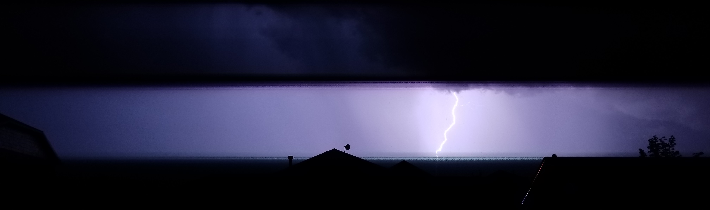

Our Group (Fab5):
- Jaden Day
- Leon Visnaw
- John Brooke
About Our Theme:
The theme for our project is lightning. We will incorporate this theme by including hero and background images with lightning. We have also chosen colors that we feel support that theme. The yellow accent will is similar to lightning, and the dark greens are similar to the color of the night sky.
We will incorporate this theme throughout our design by using a zig-zag pattern for our site on the desktop view (You can see this in our wireframes below). In other words, we will have a navigation/menu on the right and then a block of text on the left. And then we will have a navigation/menu on the left followed by a block of text on the right. We feel that this simple flow will have a clean professional look.
Our navigation/menu blocks will be floating over and overlapping other sections. This aspect of our theme is similar to the Screen Filler example from Zen Garden.
Color Scheme:
| Primary | Secondary | Tertiary | Accent 1 | Accent 2 |
|---|---|---|---|---|
| #446461 | #2F3E46 | #B9B59F | #BF9F4C | #6F634D |
Typography:
| Paragraph | Headings |
|---|---|
| 'Asap', sans-serif; | 'Libre Baskerville', serif |